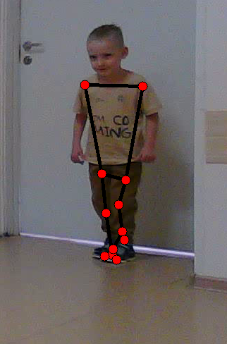
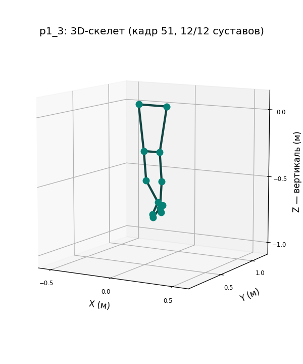
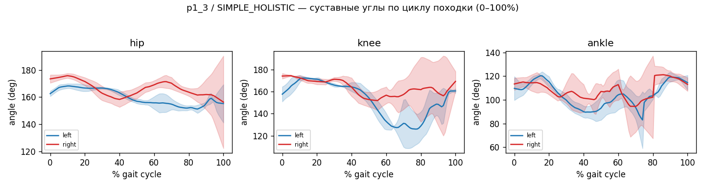
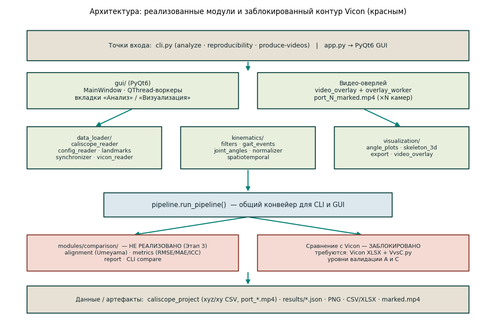
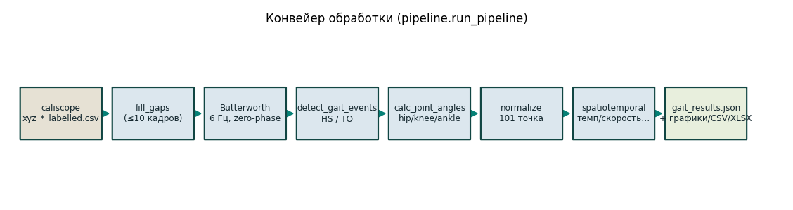
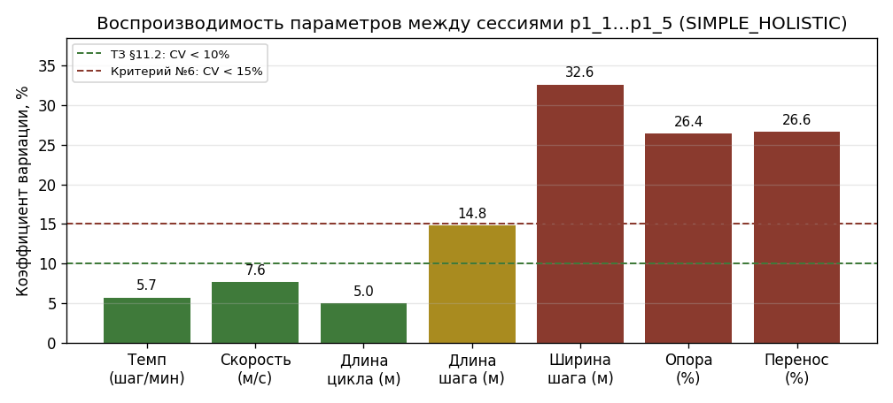

Отчёт о программном комплексе и технической реализации
Платформа: настольное приложение (PyQt6) + CLI · Python 3.14
Дата: 31 мая 2026 г. · Статус: ядро и GUI реализованы; контур сравнения с Vicon — заблокирован
О документе. Это сводный отчёт о программном комплексе анализа кинематики походки (рабочий каталогgait_analysis/). Описание целевой системы опирается на техническое задание (ТЗ_Анализ_кинематики_походки.docx) и проектные материалы каталогаdocs/; описание реализации — на фактический исходный код репозитория. Все приведённые графики и снимки получены программным кодом самого проекта на реальных данных (сессии пациента p1). Документ намеренно честно разграничивает реализованное, частично реализованное и целевое.
Программный комплекс анализа кинематики походки восстанавливает клинические параметры ходьбы из синхронной видеозаписи с нескольких камер. Сам комплекс не выполняет распознавание позы: на вход подаются трёхмерные координаты ключевых точек тела, уже вычисленные системой безмаркерного захвата движения caliscope (на основе MediaPipe). Из этих координат комплекс автоматически рассчитывает суставные углы (тазобедренный, коленный, голеностопный), события походки (контакт пятки / отрыв носка) и пространственно-временные параметры (темп, скорость, длина цикла и шага, фазы опоры/переноса), нормирует кривые по циклу походки (0–100%) и сохраняет результат в машиночитаемом виде.
Комплекс предназначен для двух режимов работы:
Технически система построена как набор независимых импортируемых Python-модулей (data_loader,
kinematics, visualization), объединённых общим конвейером run_pipeline, который используется и CLI, и GUI.
Тяжёлые вычисления вынесены в фоновый поток (QThread). Бизнес-логика полностью отделена от интерфейса; все параметры
вынесены в конфигурацию (settings.yaml); каждый модуль работает и без GUI.
comparison: выравнивание систем координат, метрики RMSE/MAE/ICC, отчёт) и обёртка
эталонного скрипта VvsC.py — не реализованы: для них в предоставленном наборе данных
отсутствуют сами данные Vicon (XLSX) и скрипт. Соответственно уровни валидации A (точность относительно
Vicon) и C (сравнительная таблица алгоритмов) пока недостижимы. При этом архитектура заранее предусматривает
этот контур: его добавление не требует переделки остальной системы.
| Параметр | Значение |
|---|---|
| Реализованные модули | data_loader, kinematics, visualization + GUI + CLI |
| Этапы (по ТЗ) | Этап 1 (ядро) и Этап 2 (GUI) — выполнены; Этап 3 (Vicon) — заблокирован |
| Подкоманд CLI | 3 (analyze, reproducibility, produce-videos) |
| Вкладок GUI | 2 («Анализ», «Визуализация») |
| Суставных углов / точек скелета | 6 углов (3 сустава × 2 стороны) · 12 суставов · 12 «костей» |
| Нормирование цикла походки | 101 точка (0–100%) |
| Тесты / линтинг | 79 тестов (pytest), все проходят; ruff — чисто |
| Главный результат (уровень B) | темп / длина цикла / скорость воспроизводимы с CV < 11% между сессиями |
Задача поставлена техническим заданием «Анализ кинематики походки» (v1.0). Цель — программный комплекс, который по синхронной видеозаписи (2 и более камер; в реальном наборе — 3 камеры) обеспечивает: (1) получение 3D-координат ключевых точек тела через caliscope; (2) автоматический расчёт параметров походки (суставные углы и пространственно-временные характеристики); (3) сравнение точности с маркерной эталонной системой Vicon; (4) удобный графический интерфейс для клинического применения. Предметная область — клиническая биомеханика и анализ походки; используются общепринятые соглашения (нормирование по циклу походки 0–100%, кривые «среднее ± 1 СКО»).
ТЗ предписывает апробацию на трёх уровнях:
| Уровень | Данные | Что проверяется | Целевой критерий |
|---|---|---|---|
| A | Синхронные записи (3 камеры + Vicon) | Точность относительно эталона: RMSE/MAE/ICC по суставам | RMSE колена < 5°, ICC > 0,85 |
| B | Пациент p1, 5 сессий (p1_1…p1_5) | Воспроизводимость между записями: коэффициент вариации (CV) | CV < 15% (по критерию №6); < 10% (по §11.2 ТЗ) |
| C | Сводная таблица | Сравнение алгоритмов: базовый (VvsC.py) / HOLISTIC / разработанный | Заполненная таблица точности |
caliscope_project присутствуют только
безмаркерные записи (3 камеры, модели трекинга POSE / SIMPLE_HOLISTIC / HOLISTIC), но нет данных Vicon и нет
скрипта VvsC.py. Поэтому реально достижим уровень B (выполнен), а уровни A и C —
заблокированы до получения эталонных данных от заказчика. Десять критериев приёмки ТЗ и их статус приведены в
Приложении B.
Расхождение в ТЗ (зафиксировано). По воспроизводимости ТЗ внутренне противоречив: раздел §11.2 (уровень B) требуетCV < 10%(«хорошая воспроизводимость»), а критерий приёмки №6 —CV < 15%. В реализации в качестве порога принят критерий №6 (< 15%); фактический результат (< 11%) проходит этот порог и близок к более строгой формулировке §11.2.
Ниже — обзор реальных возможностей комплекса. Иллюстрации получены кодом самого проекта на сессии p1_3
(модель SIMPLE_HOLISTIC, 102 кадра, частота ≈20 кадр/с).
Точка входа cli.py предоставляет три подкоманды:
analyze — полный анализ одной сессии → файл gait_results.json (события, углы, параметры);reproducibility — расчёт воспроизводимости (CV) по набору сессий (уровень B);produce-videos — генерация видео с наложенным скелетом, по одному файлу на камеру.Пример запуска анализа сессии (cli.py):
python -m cli analyze --session data/caliscope_project/recordings/p1_3 \
--model SIMPLE_HOLISTIC --out results/p1_3.json
# Wrote results/p1_3.json: 102 frames @ 19.996 fps, 5 left HS
Продюсер видео-разметки рисует наш скелет походки (12 суставов и «кости») непосредственно поверх исходных
видеокадров каждой камеры, используя 2D-детекции caliscope для этой камеры (файл
xy_<MODEL>.csv, пиксельные координаты img_loc_x/y). Поскольку метки берутся из пиксельных
детекций конкретной камеры, не требуется обратная проекция 3D→2D и калибровка. Результат — по одному файлу
port_N_marked.mp4 на камеру.

video_overlay.py из реальных 2D-детекций caliscope.Приложение app.py построено на PyQt6 как окно с двумя вкладками. Все тяжёлые вычисления выполняются в
фоновом потоке (QThread), интерфейс не блокируется.
Выбор каталога сессии, выпадающий список модели трекинга (POSE / SIMPLE_HOLISTIC / HOLISTIC), поля параметров (частота среза фильтра, минимальная длительность шага), кнопка запуска, индикатор прогресса, компактная строка качества данных (число кадров · частота · длительность · предупреждение о точках с >5% пропусков — сканируются только 12 опорных точек походки), таблица пространственно-временных параметров и кнопки экспорта в CSV/XLSX, а также кнопка «Produce marked videos».
Интерактивная 3D-визуализация скелета (vispy/OpenGL) с воспроизведением (слайдер кадров, Play/Pause, скорость 0,25× / 0,5× / 1×; шаг таймера привязан к реальной частоте съёмки, поэтому 1× совпадает с длительностью записи) и графики суставных углов (matplotlib) под ней; экспорт текущего графика в PNG.

skeleton_3d.py (вертикальная ось — Z). В приложении тот же набор точек и «костей»
отображается интерактивно через vispy/OpenGL.
angle_plots.py (объектный API matplotlib, без pyplot).ТЗ описывает четыре модуля и графическую оболочку: Модуль 1 — data_loader (чтение caliscope и Vicon,
конфигов, синхронизация); Модуль 2 — kinematics (события походки, суставные углы, пространственно-временные
параметры, нормирование, фильтры); Модуль 3 — comparison (выравнивание систем координат, метрики, отчёт
сравнения с Vicon); Модуль 4 — visualization (3D-скелет, графики углов, экспорт); плюс GUI с четырьмя
панелями (загрузка / анализ / сравнение с Vicon / визуализация), cli.py и app.py.
Реализованы Модули 1, 2 и 4, GUI и CLI; общий конвейер run_pipeline используется и из командной строки,
и из GUI-воркера. Модуль 3 (comparison) не реализован — это ядро будущего Этапа 3. GUI выполнен с
двумя вкладками вместо четырёх: панель «Сравнение с Vicon» сознательно опущена как заблокированная
(нет данных), а загрузка совмещена с вкладкой «Анализ».

comparison и зависящие от Vicon уровни валидации A и C).Функция run_pipeline(df, cfg, *, model, session_id, progress_cb) возвращает (results, df) и
выполняет фиксированную последовательность стадий с отчётом о прогрессе. Частота съёмки передаётся в
df.attrs["fps"] и используется фильтром и детектором событий.

fill_gaps → фильтр Баттерворта → детекция событий → суставные углы →
нормирование цикла → пространственно-временные параметры → результат.fill_gaps: кубическая интерполяция внутренних пропусков длиной ≤ 10 кадров.detect_gait_events: контакт пятки (HS) и отрыв носка (TO) слева и справа.calc_joint_angles_timeseries: углы hip/knee/ankle для обеих сторон.calc_spatiotemporal: темп, скорость, длины, фазы.Чтение и подготовка данных. caliscope_reader загружает xyz_<model>_labelled.csv,
сшивает координаты с метками времени из frame_time_history.csv (усреднение по портам), обнуляет начало
шкалы времени и выводит частоту съёмки из данных (а не «зашивает» её): derive_fps =
1 / median(положительных межкадровых интервалов). Канонический набор из 12 опорных точек:
Опорные точки походки (data_loader/landmarks.py):
GAIT_LANDMARKS = [
"left_shoulder", "right_shoulder",
"left_hip", "right_hip",
"left_knee", "right_knee",
"left_ankle", "right_ankle",
"left_heel", "right_heel",
"left_foot_index", "right_foot_index",
]
Имена точек — строчные, с префиксом стороны (как в нативном выводе caliscope); прописные имена ТЗ
(LEFT_HIP) трактуются как псевдонимы. Также реализованы: config_reader (разбор
config.toml caliscope — внутренние и внешние параметры камер; вектор Родрига → матрица поворота через
scipy … Rotation.from_rotvec), synchronizer (приведение двух записей к общей временно́й сетке
интерполяцией) и vicon_reader (чтение Vicon XLSX с автоопределением строки заголовка и единиц мм/м →
метры; готов к Этапу 3, проверен синтетически).
filters.py)fill_gaps(df, max_gap_frames=10) кубически интерполирует внутренние пропуски не длиннее заданного (более
длинные остаются NaN) — обязательный шаг перед фильтрацией. butterworth_filter — низкочастотный
нуль-фазовый фильтр (filtfilt), с проверкой частоты среза и длины сигнала.
nyq = 0.5 * fs
if cutoff_hz >= nyq:
raise ValueError(...)
wn = cutoff_hz / nyq
b, a = butter(order, wn, btype="low")
...
return filtfilt(b, a, signal, padtype="odd") # нуль-фазовый, без сдвига
gait_events.py)События определяются по экстремумам вертикальной траектории стопы (scipy.signal.find_peaks с
минимальной дистанцией min_stride_sec · fps): контакт пятки = минимум высоты пятки,
отрыв носка = максимум высоты носка (foot_index).
min_dist = max(1, int(min_stride_sec * fps)) hs, _ = find_peaks(-heel_v, distance=min_dist) # контакт пятки = минимумы высоты пятки to, _ = find_peaks(toe_v, distance=min_dist) # отрыв носка = максимумы высоты носка
joint_angles.py)Угол — это угол между двумя векторами, выходящими из вершины-сустава (0–180°). Тройки: тазобедренный (плечо–таз–колено), коленный (таз–колено–голеностоп), голеностопный (колено–голеностоп–носок), обе стороны.
v1 = p1 - vertex
v2 = p2 - vertex
n1 = np.linalg.norm(v1); n2 = np.linalg.norm(v2)
if n1 == 0 or n2 == 0:
return float("nan")
cos = np.clip(np.dot(v1, v2) / (n1 * n2), -1.0, 1.0)
return float(np.degrees(np.arccos(cos)))
На текущем этапе сохраняется именно «включённый» угол 0–180°; перевод в клинический знак сгибания/разгибания и тазовые углы (наклон/перекос/ротация) отнесены к доработкам (см. §8).
normalizer.py)Сигнал делится на циклы HS→HS, каждый интерполируется к 101 точке (0–100%), затем берётся NaN-устойчивое «среднее ± СКО» по точкам.
for start, end in zip(hs[:-1], hs[1:]):
seg = signal[start:end + 1]
if len(seg) < 2:
continue
src = np.linspace(0.0, 1.0, len(seg))
cycles.append(np.interp(target, src, seg)) # target = linspace(0, 1, 101)
spatiotemporal.py)Темп = (число шагов / длительность) · 60; направление движения определяется методом главных компонент (SVD) в
горизонтальной плоскости; длина цикла — расстояние между последовательными контактами пятки, с отбраковкой
нефизиологичных значений (порог max_stride_m); скорость = длина цикла · темп / 120. Аналогично —
длина и ширина шага (с отбраковкой), фазы опоры/переноса и двойной опоры.
strides_all = [np.linalg.norm(heel_left[b] - heel_left[a])
for a, b in zip(left_hs[:-1], left_hs[1:])]
strides = [d for d in strides_all if d <= max_stride_m] # физиологический потолок
stride_length = float(np.mean(strides)) if strides else np.nan
speed = stride_length * cadence / 120.0
angle_plots.py строит графики углов (объектный Figure matplotlib, по одному подграфику на
сустав; работает headless). skeleton_3d.py — GL-независимое геометрическое ядро (SKELETON_EDGES
— 12 «костей», frame_points — точки кадра, bounds — общий ограничивающий объём для устойчивого
кадрирования камеры). export.py — выгрузка CSV/XLSX (openpyxl) и PNG. video_overlay.py —
разметка видео; сопоставление индексов MediaPipe Pose с нашими точками и отрисовка:
def draw_overlay(frame, marks, edges=SKELETON_EDGES):
for a, b in edges:
if a in marks and b in marks:
cv2.line(frame, marks[a], marks[b], _BONE_COLOR, 3) # «кости» — чёрным
for (x, y) in marks.values():
cv2.circle(frame, (x, y), 7, _JOINT_COLOR, -1) # суставы — красным
cv2.circle(frame, (x, y), 7, _BONE_COLOR, 1)
return frame
Полный анализ сессии p1_3 (SIMPLE_HOLISTIC, 102 кадра, 19,996 кадр/с) даёт следующие параметры:
| Параметр | Значение | Параметр | Значение |
|---|---|---|---|
| Темп | 118,8 шаг/мин | Длина шага | 0,366 м |
| Скорость | 0,795 м/с | Ширина шага | 0,076 м |
| Длина цикла | 0,803 м | Фаза опоры* | 76,4% |
| Двойная опора* | 52,8% | Фаза переноса* | 23,6% |
* Темп, скорость, длины цикла и шага — устойчивые параметры (см. §6.2). Фазовые параметры (опора/перенос/двойная опора) систематически смещены из-за приближённого детектора отрыва носка (§8) и приведены как иллюстрация, а не как метрологически точные значения.
Подкоманда reproducibility обрабатывает все 5 сессий пациента (p1_1…p1_5) и считает коэффициент
вариации (CV = СКО/среднее) по каждому параметру. Главный результат: темп, длина цикла и скорость
воспроизводимы с CV < 11% — что укладывается в порог критерия №6 (< 15%) и близко к §11.2
(< 10%). Фазовые параметры (ширина шага, доли опоры/переноса) шумнее — это объясняется смещением оценки отрыва
носка и короткими записями (см. §8).

Из десяти критериев приёмки ТЗ семь выполнены, три заблокированы отсутствием данных Vicon и скрипта VvsC.py. Сводно (полная таблица — Приложение B):
ruff (№10).Что обеспечено и проверено.
ruff check . — без ошибок (правила E, F, I, W; длина строки 100).QT_QPA_PLATFORM=offscreen, без проверки пикселей);
(3) ручной визуальный чек-лист — единственный уровень, покрывающий реальный GL-рендер.Распределение тестов: фильтры (8), GUI-смоук (14), caliscope_reader (7), skeleton_3d (7), video_overlay (7), joint_angles (6), spatiotemporal (5), synchronizer (4), angle_plots / export / gait_events / normalizer / pipeline / cli_integration (по 3), vicon_reader (2), config_reader (1).
Раздел приведён для честности картины. Ядро анализа и визуализация работают на реальных данных полностью (загрузка → события → углы → параметры → 3D-скелет и графики). Ниже — ограничения, преимущественно в части сравнения с эталоном, метода и инфраструктуры запуска.
pingouin (для ICC)
объявлена, но не установлена.#version 120; под Wayland NVIDIA выдаёт встроенному
виджету core-profile EGL-контекст, отвергающий такие шейдеры. Решение в app.py: принудительный
перевод на XWayland (xcb), где GLX даёт совместимый контекст.def _platform_for(current):
if current == "offscreen":
return "offscreen"
if current == "" or "wayland" in current:
return "xcb" # маршрут через XWayland: шейдеры GLSL 120 компилируются
return current
alignment.py — жёсткое выравнивание систем координат методом Umeyama (1991, SVD)
(с масштабом), оценка на статичном опорном окне и применение к записи;metrics.py — RMSE, MAE, Pearson r, ICC(3,1) (рекомендуется компактная numpy-реализация ICC вместо
тяжёлого pingouin);report.py + подкоманда compare → comparison_report.json с вердиктом
(хорошо < 5°, приемлемо 5–10°, плохо > 10°);| Команда | Назначение | Ключевые аргументы |
|---|---|---|
analyze | Анализ одной сессии → JSON | --session --model --out |
reproducibility | CV по набору сессий (уровень B) | --recordings --sessions --model --out |
produce-videos | Видео со скелетом по камерам | --session --model --out |
Выходные артефакты: gait_results.json (session_id, model, fps, n_frames, processed_at,
gait_events {left/right_HS/TO}, spatiotemporal, joint_angles_mean/std — массивы по 101 точке); CSV
(parameter,value); многолистовой XLSX; PNG графиков; port_N_marked.mp4 на каждую камеру.
| № | Критерий | Статус |
|---|---|---|
| 1 | VvsC.py запускается и воспроизводит базовые метрики | Заблокировано (нет скрипта) |
| 2 | fill_gaps + butterworth_filter на данных с NaN | Выполнено |
| 3 | Детектор находит HS/TO на всех 5 сессиях p1 | Выполнено |
| 4 | RMSE углов относительно Vicon < 10° / < 5° | Заблокировано (уровень A) |
| 5 | ICC коленного сустава > 0,75 | Заблокировано (уровень A) |
| 6 | CV между сессиями p1_1…p1_5 < 15% | Выполнено (< 11%) |
| 7 | GUI загружает проект, показывает скелет и графики | Выполнено |
| 8 | Экспорт в CSV и XLSX работает | Выполнено |
| 9 | Тесты проходят, покрытие > 70% | Выполнено (95%) |
| 10 | ruff check . без ошибок | Выполнено |
cli.py — командный интерфейс; app.py — запуск GUI; pipeline.py — общий конвейер.modules/data_loader/ — caliscope_reader, config_reader, landmarks, synchronizer, vicon_reader.modules/kinematics/ — filters, gait_events, joint_angles, normalizer, spatiotemporal.modules/visualization/ — angle_plots, export, skeleton_3d, video_overlay.gui/ — main_window, worker, overlay_worker, panels/ (analyze, viz), widgets/ (plot, skeleton).tests/ — 16 файлов test_*.py + conftest + fixtures; settings.yaml — конфигурация.modules/comparison/ — отсутствует (Этап 3); docs/ — спецификации и планы.Проект caliscope: 3 камеры (port_1/2/3). Сессии пациента p1 — p1_1…p1_5 (полный набор моделей
POSE / SIMPLE_HOLISTIC / HOLISTIC) — основной набор для уровня B. p1_3 — эталонная сессия для
иллюстраций (102 кадра, 19,996 кадр/с, есть исходные port_*.mp4 для видео-разметки). Дополнительно:
p2_1 (только HOLISTIC), служебные walking_test / 2_test. Данные Vicon — отсутствуют.
Python 3.14 (в .venv; цель сборки py311). Проверенные версии: numpy, pandas, scipy, scikit-learn,
PyYAML, openpyxl, matplotlib, PyQt6 6.11.0, vispy 0.16.2, PyOpenGL 3.1.10, pytest-qt 4.5,
opencv-python-headless 4.13 (видео-разметка), pytest, pytest-cov, ruff. Не установлены (Этап 3):
pingouin, plotly. Машина: NVIDIA RTX 3060, OpenGL 4.6, Wayland + KDE; glibc 2.42.
Анализ кинематики походки — отчёт о программном комплексе. Подготовлено на
основе технического задания, проектных материалов docs/ и фактического исходного кода репозитория; все
графики и снимки получены кодом проекта на реальных данных пациента p1. Документ честно разграничивает реализованное,
частично реализованное и целевое.